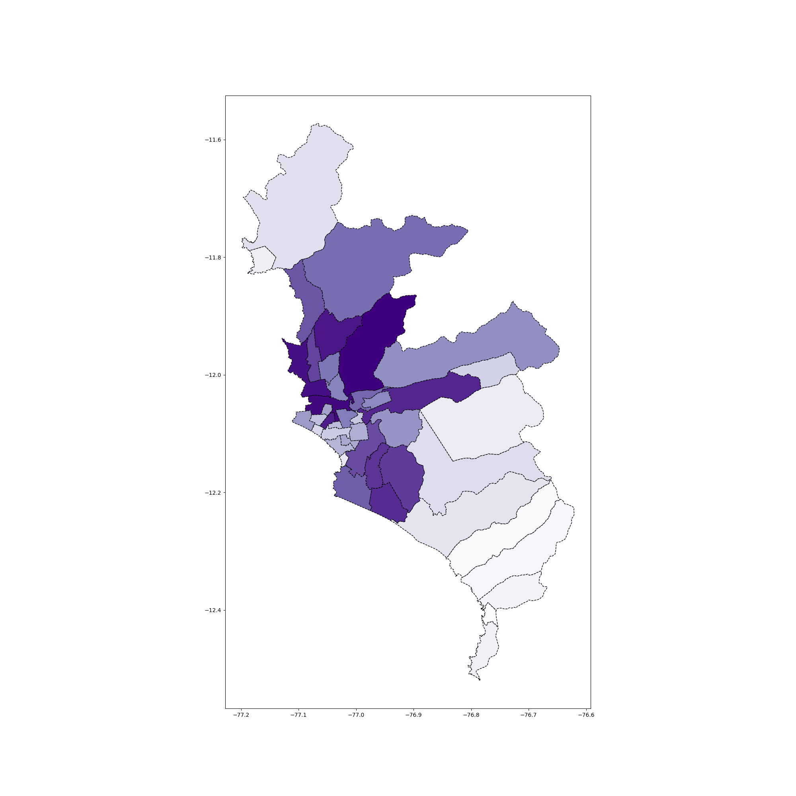
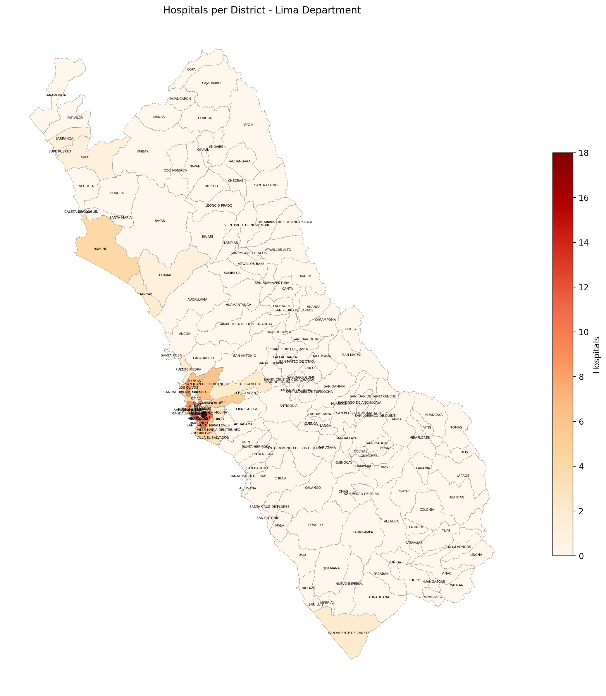
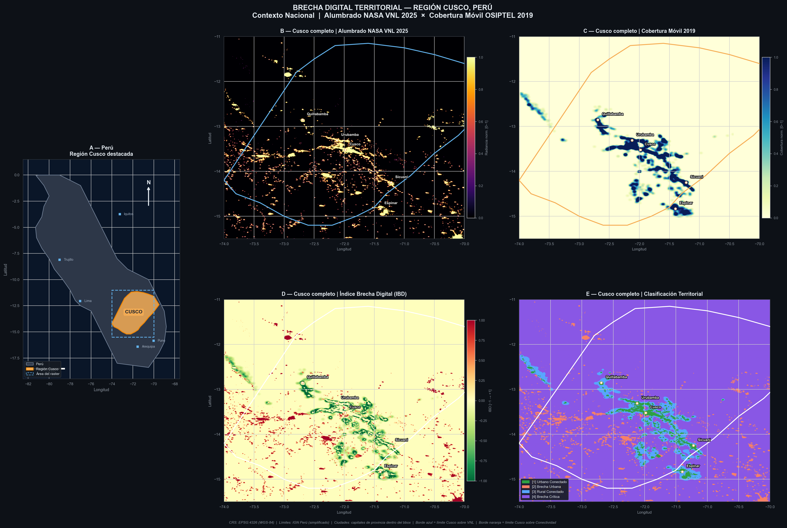
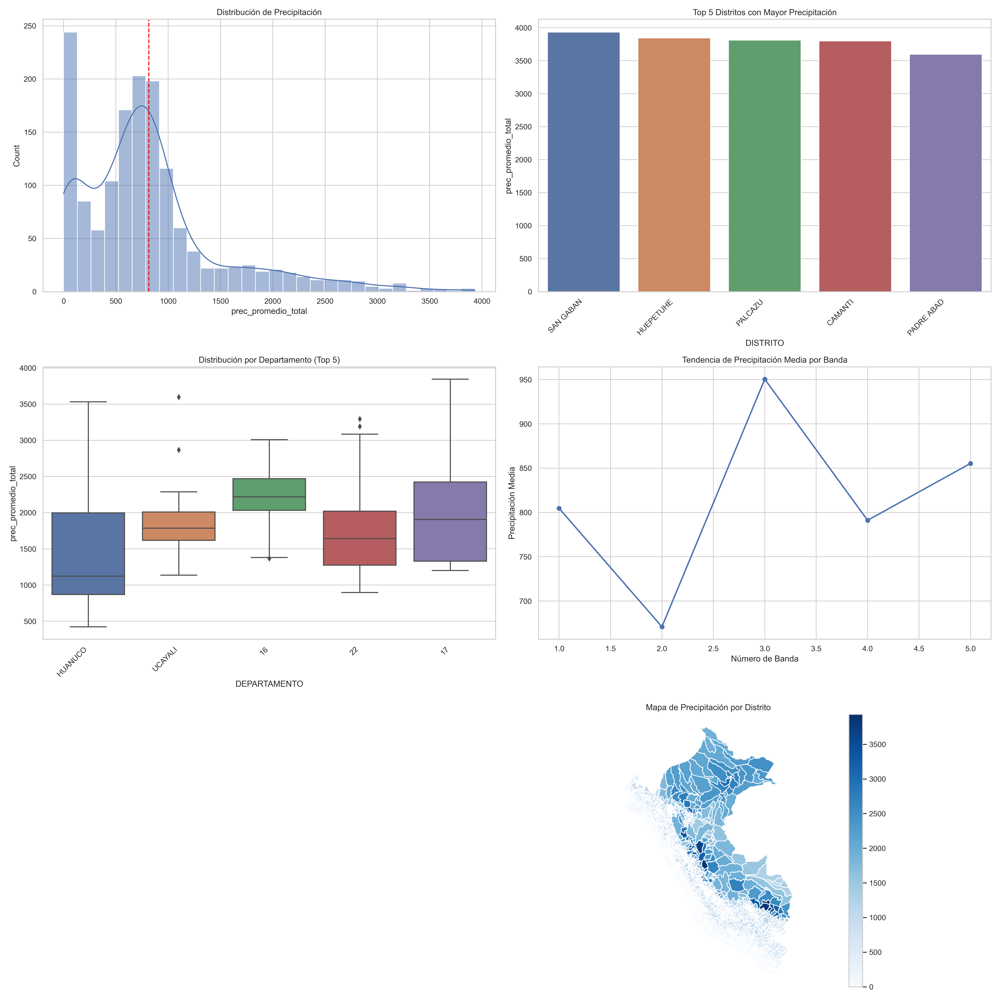
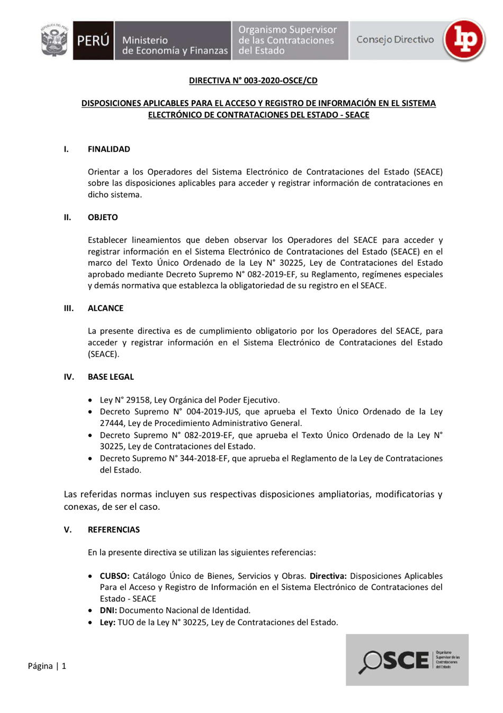

Herramientas prácticas para el análisis de datos en las ciencias sociales.
Prof. Alexander Quispe · QLAB — PUCP
Microsoft · GitHub · Caltech
Un recorrido por lo que harás con tus propias manos durante el curso.
De Python & Git a LLMs y agentes. Dos grandes bloques: fundamentos e IA aplicada.
Desde el primer día: programar con IA usando Claude Code y Codex.
Geoespacial, OCR con PaddleOCR y transcripción con Whishper — en acción.
Objetivo: que un científico social pueda recolectar, digitalizar y analizar datos del mundo real, hoy imposibles de procesar a mano.
No es un curso de ingeniería: es traer el poder de la IA y los datos al trabajo de economistas, sociólogos, politólogos y gestores públicos.
Web scraping, APIs y datos abiertos del Estado peruano.
Convertir PDFs, documentos escaneados y audio en datos analizables.
Mapas, dashboards y modelos de IA para responder preguntas reales.
El lenguaje estándar de la ciencia de datos, gratis y abierto.
LLMs y agentes que ya no requieren un equipo de ingeniería.
Casos con COVID, hospitales, clima, brecha digital y licitaciones.
Git, notebooks y código que cualquiera puede revisar y reusar.
La pregunta ya no es "¿se puede?" — es "¿qué pregunta quieres responder?"
Obtener y analizar datos con Python.
Poner la IA a trabajar sobre tus datos.
Y transversal a todo, desde la semana 1: Agent Coding con Claude Code & Codex. Programar con IA es una herramienta base del curso — no un tema reservado para el final.
🤖
Claude Code & Codex: de escribir cada línea, a dirigir agentes que escriben, ejecutan y depuran por ti.
Trabaja sobre tus propios archivos y proyectos, sin salir de tu máquina.
Se conecta a fuentes de datos externas: BCRP, datos abiertos, bases de datos.
Automatiza flujos repetidos con slash commands reutilizables.
Corre el código, ve el error y lo arregla solo — en un mismo ciclo.
De una pregunta a un dashboard o informe en minutos.
Codex y otros agentes comparten la misma filosofía: tú diriges, ellos ejecutan.
Un proyecto Claude Code que conecta datos en vivo del Banco Central de Reserva del Perú a un dashboard — vía un servidor MCP y una skill.
/bcrp-dashboard genera el tablero/bcrp-dashboard
● Conectando al MCP 'bcrp'… ✓
● Descargando: PBI, inflación, tipo de cambio
● Generando dashboard.py…
● streamlit run dashboard.py
✔ http://localhost:8501 (series en vivo)El mismo patrón sirve para datosabiertos.gob.pe, INEI, MINSA…
🗺️
Cada problema social tiene un "dónde". Pongámoslo en el mapa.

Incidencia de COVID-19 por distrito · Lima Metropolitana

Acceso a hospitales por distrito · ¿quién queda desatendido?

Brecha digital territorial · Cusco (luz nocturna NASA + cobertura móvil)
Datos abiertos + geoespacial = evidencia para política pública.
Imágenes satelitales (clima, luz nocturna, vegetación) convertidas en indicadores por distrito — y comunicadas en un tablero.

Dashboard de precipitación por distrito (LAB 7)
🧾
Millones de páginas de datos están atrapadas en PDFs escaneados. Las liberamos.
Censos, expedientes y actas escaneadas como imágenes.
Licitaciones, resoluciones y bases en PDF no estructurado.
No puedes filtrar, contar ni medir lo que no es texto.
PaddleOCR reconoce el texto de cualquier imagen o PDF escaneado — gratis y en tu propia máquina.

Una línea de escaneo recorre el documento oficial y convierte cada bloque en texto — listo para analizar con IA.
Bases del concurso público
PaddleOCR · GPU ≈ 40× más rápido
Claude revisa Cap. III & IV
LaTeX → PDF final
Los documentos sensibles nunca salen de tu computadora.
PaddleOCR es open source — sin costo por página.
El OCR libera el texto; el LLM razona sobre él.
Repo del curso: github.com/abigailquispe/cyo-licitaciones
🎙️
Convierte horas de audio — entrevistas, focus groups, sesiones — en texto analizable.
00:14 "La principal barrera fue el acceso a internet…"
00:38 "…en la comunidad casi nadie tenía datos móviles."
01:02 "Eso recién cambió cuando llegó el colegio▌"
Transcribe y traduce — campo multilingüe (quechua, aymara).
Línea de tiempo con resaltado en vivo para corregir.
Sube archivo o pega URL. Exporta SRT, VTT, TXT, JSON.
Local — sin enviar audios sensibles a la nube.
Whisper transcribe → un LLM resume y clasifica → un agente arma el reporte. Las tres herramientas de hoy son piezas de un mismo flujo de investigación.
Python, scraping, geoespacial, OCR, transcripción y agentes de IA.
Claude Code & Codex como copilotos para tu investigación.
Datos de salud, clima, brecha digital y compras públicas.
Código reproducible que puedes mostrar y reusar en tu trabajo.
IA y Data Science al servicio de las ciencias sociales en el Perú.
¡Gracias! · Preguntas →